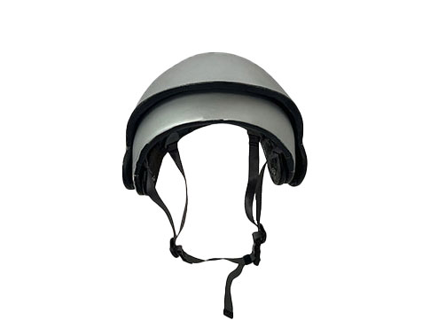

Chop Block
The Chop Block is meant to innovate on the users cooking experience. I combined the design of a dough cutter with the function of a chefs knife to create a product thats perfect for cutting and carrying food from the blade to your plate or stove. The ergonomic shape of the handle is fit to the palm and fingers. The blade shape lets the user cut in a repeated motion with ease.

Bike Helmet
I designed this foldable bike helmet for a few reasons. A small amount of cycylisyts actually wear helmets, helmets are too chunky to bring around and cyclists need head protecting in their compotion against other vehicles. I chose to value a helmet that would be worn more rather then being supper protective in this design.